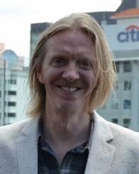

Director
Andrew Adamson
Biografia
Andrew Adamson (Auckland, 1 de desembre de 1966) és un director de cinema nascut a Nova Zelanda.
Els pares d'Adamson van ser missioners cristians. Va néixer a Auckland, Nova Zelanda però es va mudar amb els seus pares a Papua Nova Guinea quan tenia onze anys per tornar de nou a Auckland a l'edat de divuit anys. Quan va complir vint es va traslladar als Estats Units, movent-se contínuament entre San Francisco i Los Angeles. Des que va fer les pel·lícules de Narnia, s'ha establert de nou a Nova Zelanda i actualment té dues filles.
Adamson volia ser arquitecte, però va passar la data límit d'inscripció a aquesta cursa a causa d'un accident de trànsit. Adamson va iniciar la seva carrera als anys 80 com a dissenyador gràfic. En aquella època va treballar en animació digital per a The Mouse That Roared, una companyia d'Auckland. El 1986 va passar a ser el primer animador i director artístic d'una altra companyia, Video Images Ltd. Andrew va ser contractat per Pacific Data Images per anar a treballar als Estats Units. La companyia va obrir una oficina a la californiana ciutat de Los Angeles. Allà va servir com a director tècnic en pel·lícules com Toys (1992) protagonitzada per Robin Williams o Angels in the Outfield (1994) en la qual apareix Danny Glover.
Va dissenyar diversos logos per a diferents programes i també va fer anuncis publicitaris, alguns dels quals van ser premiats. Després d'això, va tenir l'oportunitat de treballar supervisant els efectes especials de Batman Forever (1995) i Batman i Robin (1997).
El 1991, junt a Vicky Jenson, dirigeix Shreck per a DreamWorks Animation, el que seria el seu primer llarmetratge d'animació. La pel·lícula, estrenada el 2001, així com la seva seqüela, Shreck 2 (2004), van rebre moltíssims premis. El 2005 va escriure i dirigir el seu primer llargmetratge d'imatge real, Les Cròniques de Nàrnia: el lleó, la bruixa i l'armari i, el 2008, Les Cròniques de Nàrnia: el príncep Caspian. Adamson no va poder dirigir Shrek Tercer, la tercera seqüela de Shrek, estrenada el 2007, justament perquè, en la mateixa època, estava dirigint Les Cròniques de Narnia, però va escriure el guió i se'n va ocupar de la producció executiva.